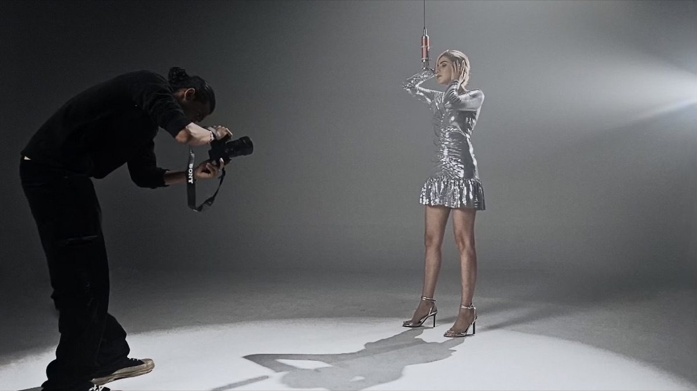

A — Proximity decode the cursor is a torch: characters resolve as it passes over them

← run the cursor along it
rahulkuttappy805@gmail.comOpen to projects, collabs, conversations — Calicut // Bengaluru
B — Dither dissolve the same Bayer dither as REAL, but the cursor sharpens it
C — The whole block wakes everything is noise until the pointer enters, then it resolves outward from it
end — all three fall back to plain, readable text without a pointer